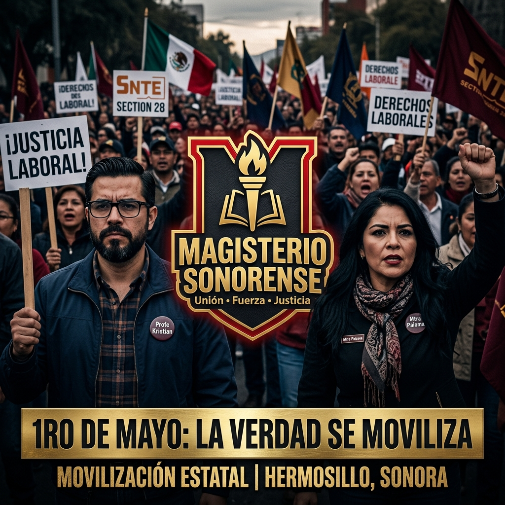
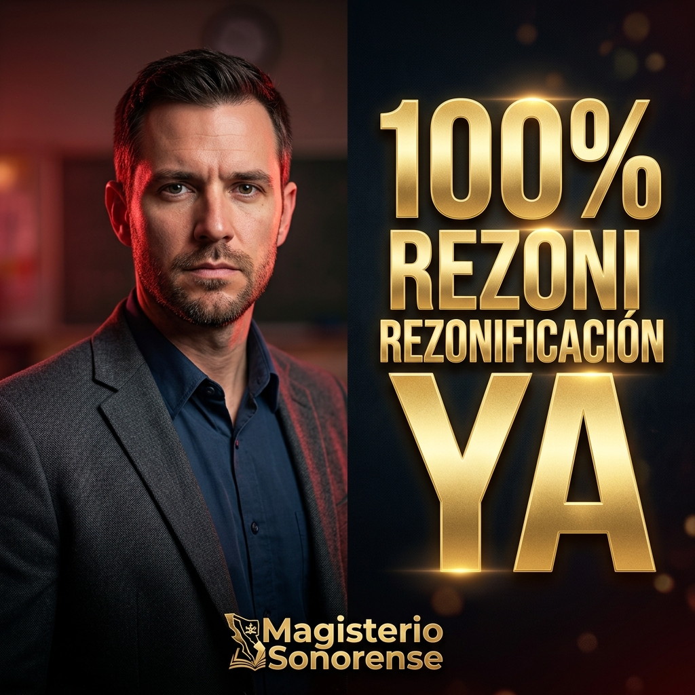

La Verdad se Moviliza
Este 1ro de mayo, el Magisterio Sonorense toma las calles. No es solo una marcha, es la demostración técnica y política de nuestra fuerza. Utiliza este material para inundar las redes con nuestra exigencia.
Descargar Banner FB{kind=link}
Profe Kristian
Representando la claridad técnica y el liderazgo firme del MS. Un símbolo de la verdad actuarial que la autoridad no puede ignorar.
Descargar Avatar{kind=link}
Mtra Paloma
La fuerza estratégica y la empatía con la base. El rostro de la organización y la lucha por un futuro digno para cada docente.
Descargar Avatar{kind=link}
Impacto en Vertical
Diseñado para TikTok y Reels. Máxima visibilidad para las nuevas generaciones de maestros y para irrumpir en el algoritmo con nuestra dignidad.
Descargar Vertical{kind=link}

Demandas de Poder
Láminas cuadradas listas para Instagram y estados de WhatsApp. Mensajes directos: 100% Rezonificación, No a la UMA, Justicia PAAE.
Descargar Cuadrado{kind=link}
Guía de Combate Digital
Copia y pega estos mensajes en tus grupos de WhatsApp y publicaciones de Facebook para coordinar la movilización.